Water data
pcvr v1.1.1.1
Josh Sumner, Katie Murphy
Source:vignettes/articles/field_capacity.Rmd
field_capacity.RmdOutline
- Why water use data is important for plant science.
- Overview of WUE vs pWUE
- Relevant equations.
- Reading in water data
- Water diagnostic plots
- Annotating water diagnostic plots
- pWUE calculations and plotting
- rate
- abs
- normalized_daily_transpiration
- How to make hierarchical models
Why water data?
- Water is fundamental to plant life.
- Plants need water to survive.
- Water is a critical farming resource.
- Climate change affects water supply.
How does a plant use water?
Plant water use is controlled by a complex combination of physics, plant physiology, anatomy, and morphology.
Here’s a brief overview of the “pull theory” of how plants uptake water from the soil:
- 1: Differences in pressure are a driving force in water movement (lower pressure at the leaf surface and higher pressure in the soil).
- 2: Water enters the plant through roots (note many root traits will affect how this happens).
- 3: Water travels through the xylem (channels along plant tissue) due to capillary action (hydrogen bonds).
- 4: Water Transpires (aka evaporates) from plant leaves through stomata (stomata are small pores mostly along the underside of leaves). This process is similar to us sweating. – The rate of transpiration depends on Boundary Layer Conductance. — Boundary Layer Conductance (BLC) is a measure of how easily gas exchange happens in a small “boundary layer” around the plant. — BLC is changed by qualities such as leaf shape and angle (think about facing the sun or standing at an angle) as well as trichome (small hairs on leaf surface) length and density (think trapping humidity in your hair). – Transpiration is also depends on stomatal conductance, a combination of how many stomata there are and how open they are. – Transpiration is also dependent on environmental conditions such as ambient temperature, wind speed, atmospheric pressure, light intensity, soil type, soil moisture content, etc. — Vapor Pressure Deficit (VPD) is another important variable for transpiration, and is related to air temperature and humidity. VPD is the difference in the amount of water in the air vs the amount of water the air can hold at the given temperature. Since warmer air can hold more water VPD is higher on a hot day even when relative humidity is held constant, this is an important consideration for experimental design particularly in growth chambers.
Transpiration has to be balanced carefully by a plant since the plant is using water both to build new biomass and to cool off; this is not a 1:1 trade-off, and is dependent on all the variables described above.
There can be secondary consequences to increased transpiration depending on the experimental design and what you are measuring, for instance: - Higher transpiration means higher transport of nutrients into the plant from soil. - Higher transpiration means more transport of xylem-mobile metabolites in the plant. - Higher transpiration reduces leaf temperature. - Open stomata (more transpiration) may provide an avenue for pathogen infection. - Water pH and salt content affect uptake and the plant health.
Field Capacity
What is field capacity
Field capacity is the amount of water held in soil after excess water has been able to drain and the rate of macropore drainage (water seeping deeper into the ground) approaches 0. Field capacity depends on numerous factors and is dependent on soil type. It is a useful measure of soil water capacity.
Why do we care about field capacity
Field capacity matters for many types of phenotyping experiments because it’s used to set target weights for watering. Many systems use a target field capacity to select the target pot weight, which determines how much water weight should be added to reach the target field capacity. Knowing field capacity can also let us evaluate whether or not plants are actually reaching landmarks we care about for drought stress as measured by soil water content.
Field capacity equations
Constants in an experiment:
Reminder: 1 g of water = 1 mL of water
CSW: Weight of carriage + saucer = 345 g
DW: Weight of dry pot (pot + dry soil) = varies by experiment, will be provided by Core Facility (one number for the whole experiment, which is an average of sample pots)
SW: Weight of saturated pot (pot + soaked soil) = varies by experiment, will be provided by Core Facility (one number for the whole experiment, which is an average of sample pots)
Saturated Water Volume: SW - DW
Target field capacity (%) = water content / saturated water volume x 100 = varies by experiment, timepoint, and treatment, will be provided by Core Facility (number provided per pot)
Measured daily (or more frequently) in an experiment:
Current water content = current weight - CSW - DW
Current field capacity (%) = current water content / saturated water volume x 100
Measuring water use
Measuring water use can be difficult. Broadly, we can either measure water vapor released from the plant or measure the amount of water removed from the soil. Here we focus on weight changes to the pot.
Measuring water use via weight changes in a pot has some caveats. Assumptions: - Sometimes we assume there is negligible transpiration at night (when lights are off, stomata are closed); this is used for DiTech calculations, but not Bellwether. - We assume the only way that water is lost from the pot is via transpiration through the plant, and not via evaporation from the soil. - Sometimes we ignore the plant growth in calculating the amount of water used each day as the change in weight over time; this is used for Bellwether, but not DiTech. We can make adjustments to this assumption based on previous experiments where we know how much biomass the plants gain each day, and adjust our target weights accordingly.
In the following plot we look at a simulated plant’s watering data. This plant has been weighed for 5 days, with water added in the middle of the night. Plants were weighed shortly before and after watering. The weight before watering will be used to calculate the current water content and current field capacity. The target field capacity will be used to determine how much water to add. The difference in weight between the “after watering” weight and the following day’s “before watering” weight are what we will use to calculate transpiration and water use efficiency (WUE).
Calculating Transpiration
Transpiration is calculated as the difference in weight between two timepoints. Here, we use the weight after watering, and subtract the weight before watering in the following night to determine the total water transpired (g) in that time period (here, 1 day).
Note: the values below are positive because we are framing the question as “the amount of water transpired”, so despite the slope of the line (showing mass in the pot) going down we have positive numbers.
The absolute amount of water transpired is interesting, but it is important to normalize this value to plant biomass. We generally expect larger plants to transpire more water; we may get excited that a genotype transpires more water than another, when really it was jut a bigger plant! We need to look at transpiration relative to plant biomass. We will do so with two measurements: Normalized Transpiration or Water Use Efficiency.
To normalize transpiration, we need to know the total plant biomass, or a proxy of this measurement. Below is an example where we know the plant biomass each day, and will divide the daily transpiration by the plant biomass that day to get Normalized Transpiration.
WUE
Another important water metric is water use efficiency. Water use efficiency is generally calculated as a rate of biomass gained per unit of water. In other words, how much biomass was added to the plant for the amount of water used in the same time period? A good analogy is the miles per gallon of fuel that a car may get; WUE is dependent on genotype and environment, just like a car’s MPG is dependent on the type of car and the road it is driving on (freeway vs. city roads).
WUE might also be considered as the amount of water used to sustain a given biomass, which here is referred to as “absolute WUE”.
Other calculations of WUE include replacements for biomass, such as grain yield, net carbon dioxide uptake, and more, that are not covered here.
PWUE
We may not always have daily measurements of plant biomass, since this would mean killing the plant in a destructive measurement. In high-throughput plant phenotyping we use a proxy for biomass, such as leaf area (number of pixels labelled as a plant) captured via plant images. Because we are using a proxy for biomass we have to call image-based WUE Pseudo-Water Use Efficiency (pWUE).
In pcvr the pwue function calculates
normalized transpiration, rate based pWUE, and absolute pWUE.
Reading in water data
In this article we’ll use simulated data, but the
bw.water function may be helpful for you reading in JSON
Lemnatech metadata.
Here for more control we’ll use simulated data:
Simulated Data
We’ll simulate groups of data with distinct watering and growth trends.
set.seed(123)
days <- 25
n_plants <- 10
phenotype_conditions <- list(
"death" = list("model" = "monomolecular", params = list(A = 50, B = 0.03)),
"sigmoid" = list("model" = "logistic", params = list(A = 200, B = 12, C = 3.5)),
"abrupt" = list("model" = "logistic", params = list(A = 200, B = 12, C = 1)),
"exponential" = list("model" = "exponential", params = list(A = 1, B = 0.2)),
"slowing" = list("model" = "power law", params = list(A = 15, B = 0.6)),
"linear" = list("model" = "linear", params = list(A = 8))
)
watering_conditions <- list(
"constant" = list(
"before" = NA,
"after" = rep(25, days)
),
"target weight" = list(
"before" = round(90 * exp(-0.1 * seq_len(days))),
"after" = rep(100, days)
),
"increasing cont" = list(
"before" = NA,
"after" = (seq_len(days) * 4) + 10
),
"decreasing cont" = list(
"before" = NA,
"after" = (days * 4) + 10 - (4 * seq_len(days))
),
"increasing step" = list(
"before" = NA,
"after" = c(rep(20, floor(days / 2)), rep(75, ceiling(days / 2)))
),
"decreasing step" = list(
"before" = NA,
"after" = c(rep(75, floor(days / 2)), rep(20, ceiling(days / 2)))
)
)
ex <- do.call(rbind, lapply(names(phenotype_conditions), function(pc) {
p_cond <- phenotype_conditions[[pc]]
df <- pcvr::growthSim(p_cond$model,
n = n_plants, t = days,
params = p_cond$params
)
df$group <- pc
colnames(df)[c(2, 4)] <- c("pc", "area")
#* for this phenotype data make a copy for each watering condition set
pc_df <- do.call(rbind, lapply(names(watering_conditions), function(wc) {
w_cond <- watering_conditions[[wc]]
#* per each individual make weight_before and weight_after columns
wcdf <- do.call(rbind, lapply(unique(df$id), function(i) {
# subset data
sub <- df[df$id == i, ]
# define vectors for each
b <- sort(w_cond$before + rpois(days, 1), decreasing = TRUE)
w <- w_cond$after
if (all(is.na(w_cond$before))) {
b <- 10 + (sub$area * rbeta(days, 200, 200))
w <- b + w_cond$after
}
# add columns
sub$weight_before <- b
sub$weight_after <- w
return(sub)
}))
wcdf$wc <- wc
return(wcdf)
}))
return(pc_df)
}))
key <- expand.grid(pc = names(phenotype_conditions), wc = names(watering_conditions))
key$group <- as.character(seq_len(nrow(key)))
ex <- plyr::join(ex, key)## Joining by: pc, wcTraits of the simulated data
The simulated data has 6 phenotype trends. Here we’re using simulated leaf area from a hypothetical 2D image, but the phenotype could be true plant biomass, or another measurement.
-
sigmoid: This is typical logistic growth. -
abrupt: Logistic growth with an abrupt growth period. -
exponential: Exponential growth, non-asymptotic and speeding up over time. -
slowing: Non-asymptotic growth, slower than linear. -
linear: Non-asymptotic linear growth. -
death: Slow asymptotic growth with a low asymptote.
ggplot(ex[ex$wc == "constant", ], aes(time, area, group = id)) +
facet_wrap(~pc) +
geom_line() +
labs(
y = expression("Leaf Area (cm"^2 * ")"),
x = "Time",
title = "Treatments with several different growth trends"
) +
pcv_theme() +
theme(legend.position = "none")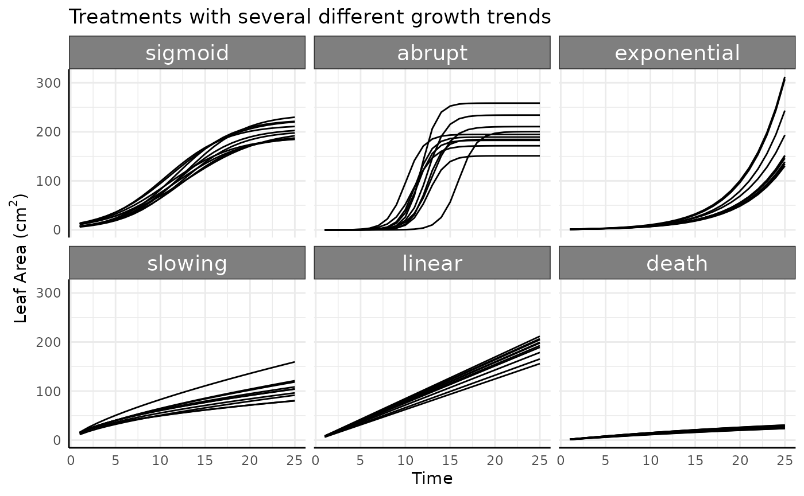
There are also 6 watering data options in the simulated data.
-
constant: Pre-watering weight increases with the phenotype (area), and a constant, specific amount of water is added to that pre-watered weight. Field capacity is not considered. -
target weight: Here we assume that the weight of the plant is negligible (as we generally assume on Bellwether-style high-throughput phenotyping experiments). Every day the plant uses some amount of water and as the plant grows over time that amount increases, driving the pre-watering weight down over time. At each watering the pot is filled until it hits a target weight (100g here, just to use a nice round number) that is calculated based on the target field capacity. -
increasing cont.: Pre-watering weight increases with the phenotype (area), and every day a larger, specific amount of water is added to that pre-watered weight. Field capacity is not considered and target weight is not used. -
decreasing cont.: Pre-watering weight increases with the phenotype (area), and every day a smaller, specific amount of water is added to that pre-watered weight. Field capacity is not considered and target weight is not used. -
increasing step: Pre-watering weight increases with the phenotype (area), and a constant, specific amount of water is added to that pre-watered weight every day, but half way through the experiment that amount of water increases from 20g to 75g. Field capacity is not considered and target weight is not used. -
decreasing step: Pre-watering weight increases with the phenotype (area), and a constant amount of water is added to that pre-watered weight every day, but half way through the experiment that amount of water decreases from 75g to 20g. Field capacity is not considered and target weight is not used.
l <- reshape2::melt(ex[ex$pc == "sigmoid", ],
id.vars = c("id", "group", "time", "wc"),
measure.vars = c("weight_before", "weight_after")
)
ggplot(
l[l$id %in% paste0("id_", 1), ],
aes(x = time + ifelse(variable == "weight_before", -0.25, 0.25), y = value, color = variable)
) +
facet_wrap(~wc) +
geom_line(color = "black") +
geom_point() +
labs(
y = "Weight", x = "Time",
title = "Different watering schemes with sigmoid growth"
) +
pcv_theme()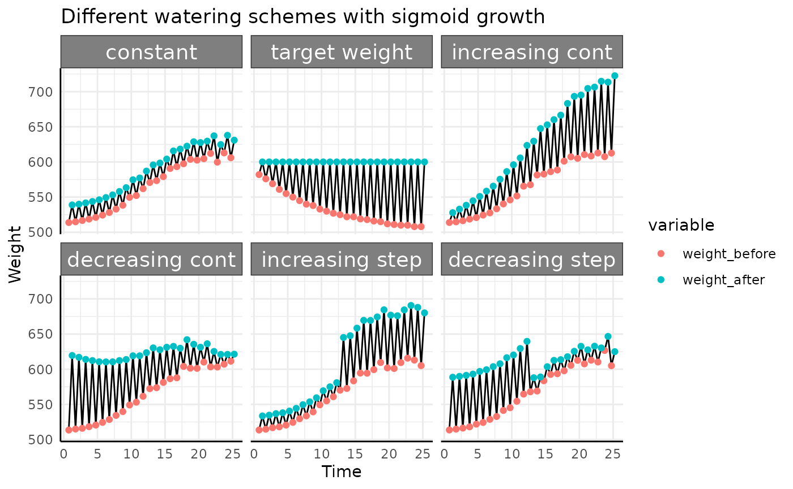
Here we’ve taken a roundabout way to simulate the amount of water used by simulated pre-watering weight and post-watering weight since that is how you’ll get plant weight data most of the time. For water use the important thing about the above plot is not where the red or blue points are, only the length of the line between them is important since that represents the amount of water used. With that in mind we’ll look at this plot a different way, focusing on the length of the black lines.
ggplot(ex[ex$id == "id_1", ], aes(x = time, y = weight_after - weight_before, group = id)) +
facet_wrap(~wc) +
geom_line() +
labs(y = "Water Added",
x = "Time",
title = "Water added for all watering schemes shown") +
pcv_theme() +
theme(legend.position = "none",
strip.text.x.top = element_text(size = 10),
strip.text.y.right = element_text(size = 10))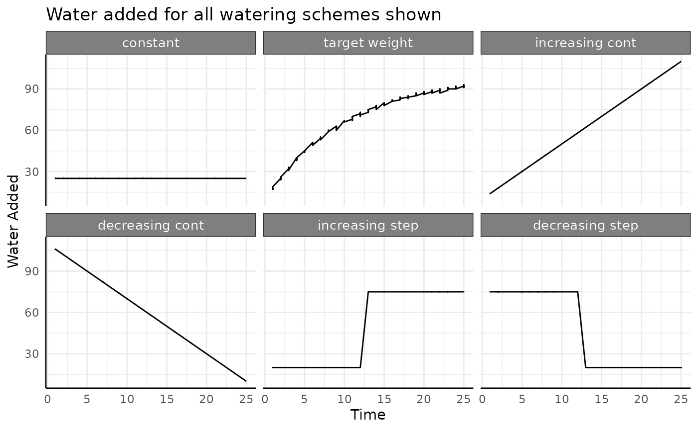
Looking at the data this way helps drive home the point that water
use can increase, decrease, or remain constant. There are different ways
to increase or decrease, but the we’ll focus on the overall trend now
and limit our simulated data to the constant,
increasing continuous, and
decreasing continuous watering categories.
Combining everything from those sets of conditions we can look at the pre vs post watering weights for all 36 of our options. Phenotype (here, leaf area, but plant biomass could be used) shown in light gray, pot weight after watering shown in blue.
ggplot(ex, aes(time, area, group = id)) +
facet_grid(wc ~ pc) +
geom_line(color = "gray70", linewidth = 0.1) +
geom_line(aes(y = weight_after), color = "blue") +
labs(
y = "Weight After Watering",
x = "Time",
title = "Weight After Watering For all combinations of conditions"
) +
pcv_theme() +
theme(
legend.position = "none",
strip.text.x.top = element_text(size = 10),
strip.text.y.right = element_text(size = 10)
)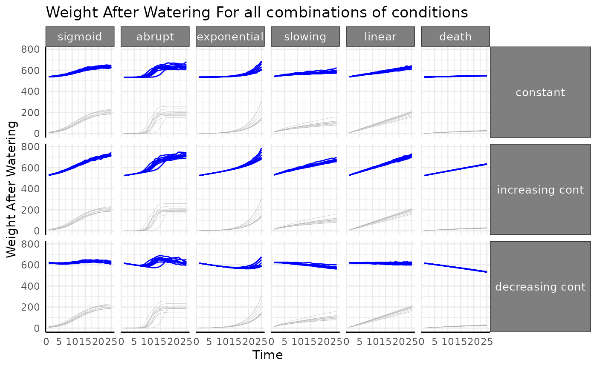
Water data quality control plots
Before working with water derived metrics it’s generally good to get a feeling for the raw watering data with similar plots as we used early on. Here we’re checking that: - there are reasonable looking differences between subsequent weights - that any treatment groups have the expected watering pattern - that the weight before watering is lower than the previous post-watering weight (indicating that transpiration happened). The length of the black lines between weights here shows the water added.
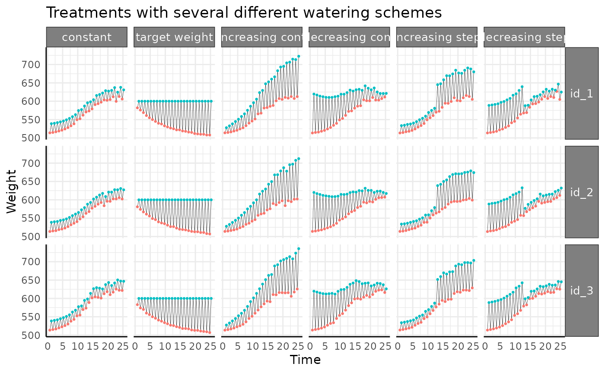
We don’t see anything that raises red flags, so we’ll move on. If water added was to spike incredibly high, or the different in water added was not what was intended by the design, it would be a sign that there was an issue with the equipment.
pwue
The pwue function takes one or two dataframes as input.
If one dataframe is given then it should include phenotype(s) (such as
leaf area or plant biomass) and watering data (pre- and post-watering
weights), and is expected in wide format. If two dataframes are given
then one should contain phenotypes and the other should contain watering
data. The pheno, time, and id
arguments control which variables are used to normalize for plant size
(pheno), subset the data to a given time
(time) and to identify a plant over time (id).
The offset argument optionally controls how long before a
phenotype’s measurement water has to have been added to count towards
that phenotype, normally this is left 0. pre_watering and
post_watering should name columns of the dataframe
containing water data corresponding to pre-watering weight and
post-watering weight. Finally, the method argument controls
which values are calculated. Currently it accepts “rate”, “abs”, and
“ndt” for the rate based pWUE, absolute value pWUE, and Normalized Daily
Transpiration.
Note that here we are using very coarse measurements of time and for some experiments more granular time data is essential.
Rate Based
rb <- pwue(
df = ex, w = NULL, pheno = "area", time = "time", id = c("id", "group"),
pre_watering = "weight_before",
post_watering = "weight_after", method = "rate"
)We’ll look at an example replicate of each group to get started. Using the grid faceting we can’t free the scales, so we’ll go over each watering condition in turn.
Constant Watering
-
constant: Pre-watering weight increases with the phenotype (area), and a constant, specific amount of water is added to that pre-watered weight. Field capacity is not considered.
Remember that the rate-based pWUE formula we are using is . In this watering condition the denominator is a constant. Since the numerator is the measurement-to-measurement change it is essentially the derivative (slope) of the original phenotype.
With that in mind we can start thinking about what we’d expect to
see. As an example, the death group is always going to have
small values for pWUE compared to other groups since the change in size
between any two measurements is always very small. If we zoom in then
there should be a downward trend driven by the phenotype increasing by
smaller and smaller amounts towards an asymptotic limit.
death shows slow monomolecular growth with a low asymptote
when compared to our other groups. Similarly, the sigmoid
group should start to look like a bell curve, since the derivative of a
sigmoid is bell shaped (the CDF of a normal distribution is a logistic
curve, etc).
rbc <- rb[rb$wc == "constant", ]
ggplot(rbc, aes(x = time, y = pWUE, group = id)) +
facet_wrap(~pc, scales = "free_y") +
geom_line() +
labs(title = "Zooming in on the constant watering condition") +
pcv_theme()## Warning: Removed 10 rows containing missing values or values outside the scale range
## (`geom_line()`).This follow the general trends we’d expect, but some things look strange and it all looks very noisy.
Sigmoid
As mentioned above, we expect a roughly bell shaped plot of rate pWUE over time for our data with constant watering and logistic growth.
ggplot(
rbc[rbc$pc == "sigmoid", ],
aes(x = time, y = pWUE, group = id)
) +
geom_line() +
labs(
title = "Constant Watering with Logistic Growth",
y = "(Rate based) pWUE"
) +
pcv_theme()## Warning: Removed 10 rows containing missing values or values outside the scale range
## (`geom_line()`).The overall trend makes sense, but why is the data so spikey? We can
sometimes get an easier grasp of pWUE if we plot the component parts,
which are both returned from pwue.
ggplot(
rbc[rbc$pc == "sigmoid", ],
aes(x = time, group = id)
) +
facet_wrap(~group) +
geom_line(aes(y = total_water, color = "Water (denominator)")) +
geom_line(aes(y = pheno_diff, color = "Phenotype (numerator)")) +
labs(
title = "Components of Rate pWUE",
subtitle = "constant watering, logistic growth",
y = "Pheno Diff and Water Diff", x = "Time"
) +
pcv_theme() +
theme(legend.position = "bottom")## Warning: Removed 10 rows containing missing values or values outside the scale range
## (`geom_line()`).
## Removed 10 rows containing missing values or values outside the scale range
## (`geom_line()`).Now we can see that the “spikey-ness” is a product of the water data having a lot of noise, which is likely to be the case in real data but for our simulation is just a byproduct of how we’re making the pre-watering weights.
Abrupt
The typical sigmoid data was pretty simple, but what happens if we have a different kind of sigmoid shape? First looks at the pWUE for our “abrupt” logistic growth are way less friendly.
ggplot(
rbc[rbc$pc == "abrupt", ],
aes(x = time, y = pWUE, group = id)
) +
geom_line() +
labs(
title = "Constant Watering with Abrupt Growth",
y = "(Rate based) pWUE"
) +
pcv_theme()## Warning: Removed 10 rows containing missing values or values outside the scale range
## (`geom_line()`).We’re going to have to zoom in to understand the general trend, then we can look at each replicate to see what is going on with that large spike.
ggplot(
rbc[rbc$pc == "abrupt", ],
aes(x = time, y = pWUE, group = id)
) +
geom_line() +
labs(
title = "Constant Watering with Abrupt Growth",
y = "(Rate based) pWUE"
) +
pcv_theme() +
coord_cartesian(ylim = c(-3, 50))## Warning: Removed 10 rows containing missing values or values outside the scale range
## (`geom_line()`).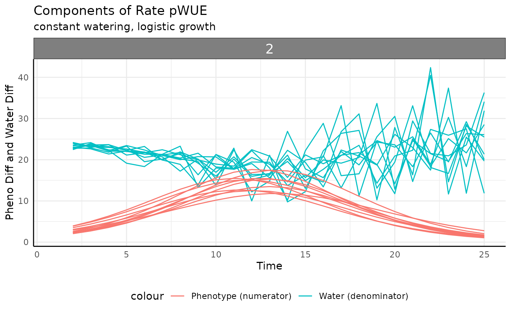
That doesn’t clear it up much, but we do basically have the same kind of shape as before where the logistic phenotype yielded a bell curve.
The first big problem we see is that pWUE is negative in some cases.
Normally we’d say that if we add a constant amount of water to each
“before” weight that the “after” weight has to be larger, so the
difference must be positive. That is true, but with this phenotype we
have fast enough changes measurement-to-measurement between days 10 to
14 that we see a couple of times where the previous
weight_after_watering is lower than the current
weight_before_watering. In our case this is a product of
the simulation having very simple rules but this sort of discrepancy
comes up a lot with water data since there are so many possible sources
of error and noise. Generally we will remove any negative values for
total_water. pWUE can also be flipped to be negative if the
numerator (change in biomass) becomes negative. In most experiments that
is indicative of a shortcoming of images as a proxy for biomass or an
image analysis problem. It’s a good idea to figure out why you have
negative values since it might indicate an interesting stress response,
a problem with equipment or a problem with upstream analysis. In reality
this sort of thing shows up all the time due to all sorts noise,
measurement error, and image analysis problems.
rbcp <- rbc[rbc$pc == "abrupt", ]
summary(rbcp$total_water)## Min. 1st Qu. Median Mean 3rd Qu. Max. NA's
## -13.07 17.33 24.30 20.83 25.00 38.68 10
rbcp <- rbcp[which(rbcp$total_water > 0), ]Now that we’ve removed the negative values we can think about the components of rate pWUE a little more clearly.
ggplot(
rbcp,
aes(x = time, group = id)
) +
facet_wrap(~id) +
geom_line(aes(y = total_water, color = "Water (denominator)")) +
geom_line(aes(y = pheno_diff, color = "Phenotype (numerator)")) +
labs(
title = "Components of Rate pWUE",
subtitle = "constant watering, abrupt growth",
y = "Pheno Diff and Water Diff", x = "Time"
) +
pcv_theme() +
theme(legend.position = "bottom")Notice that we have dips in the amount of water used that coincide with the peaks of measurement-to-measurement phenotype change. That’s a combination that will make for some very high pWUE peaks and plenty of noise. The peaks in measurement-to-measurement phenotype change have to happen with such fast changes. The troughs in amount of water used may be seen on a system where the weight of a pot changes noticeably with the measured phenotype (the plant is a non-negligible amount of the total weight of whatever pot/cart is being weighed), but that will depend on your equipment. This trend is very dramatic, it is likely that in your experiments the soil and pot would out weigh the plant by several orders of magnitude which would make for less steep pWUE curves.
ggplot(
rbcp,
aes(x = time, y = pWUE, group = id)
) +
facet_wrap(~id, scales = "free_y") +
geom_line() +
labs(
title = "Constant Watering with Abrupt Growth",
y = "(Rate based) pWUE"
) +
pcv_theme()
Exponential
The previous two phenotype options were asymptotic. What happens with non-asymptotic growth?
ggplot(
rbc[rbc$pc == "exponential", ],
aes(x = time, y = pWUE, group = id)
) +
geom_line() +
labs(
title = "Constant Watering with Exponential Growth",
y = "(Rate based) pWUE"
) +
pcv_theme()## Warning: Removed 10 rows containing missing values or values outside the scale range
## (`geom_line()`).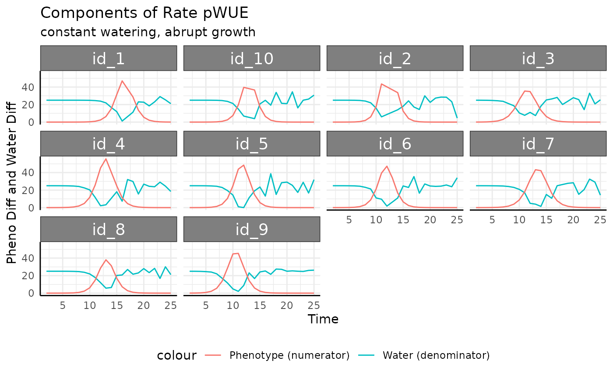
As before we’ll remove the negative values for
total_water. Here they come from the same place since the
phenotype is changing so quickly.
rbce <- rbc[which(rbc$pc == "exponential" & rbc$total_water > 0), ]
ggplot(
rbce,
aes(x = time, y = pWUE, group = id)
) +
geom_line() +
labs(
title = "Constant Watering with Exponential Growth",
y = "(Rate based) pWUE"
) +
pcv_theme()With the negative values removed the trend here looks a lot like the raw phenotype data.
ggplot(
ex[ex$pc == "exponential" & ex$wc == "constant", ],
aes(time, area, group = id)
) +
facet_grid(wc ~ pc) +
geom_line() +
labs(
y = "Area",
x = "Time",
title = "Exponential Phenotype"
) +
pcv_theme() +
theme(
legend.position = "none",
strip.text.x.top = element_text(size = 10),
strip.text.y.right = element_text(size = 10)
)This is a feature of exponential growth, since the measurement-to-measurement difference increases exponentially when we have roughly constant water use the pWUE trend will look exponential.
ggplot(
rbce,
aes(x = time, group = id)
) +
facet_wrap(~id) +
geom_line(aes(y = total_water, color = "Water (denominator)")) +
geom_line(aes(y = pheno_diff, color = "Phenotype (numerator)")) +
labs(
title = "Components of Rate pWUE",
subtitle = "constant watering, abrupt growth",
y = "Pheno Diff and Water Diff", x = "Time"
) +
pcv_theme() +
theme(legend.position = "bottom")Slowing
For non-asymptotic growth that is slowing down (exponent below 1) we should expect to see decreasing pWUE given constant watering.
ggplot(
rbc[rbc$pc == "slowing", ],
aes(x = time, y = pWUE, group = id)
) +
geom_line() +
labs(
title = "Constant Watering with Power law (B<1) Growth",
y = "(Rate based) pWUE"
) +
pcv_theme()## Warning: Removed 10 rows containing missing values or values outside the scale range
## (`geom_line()`).While the growth is non-asymptotic pWUE is asymptotic since the numerator is monotone increasing but is slowing down while the denominator is roughly constant.
Linear
The measurement-to-measurement change in linear data is the same between any two subsequent times. Since the water data is roughly constant (at least it has a 0 slope) we expect to see flat but noisy pWUE here.
ggplot(
rbc[rbc$pc == "linear", ],
aes(x = time, y = pWUE, group = id)
) +
geom_line() +
labs(
title = "Constant Watering with Linear Growth",
y = "(Rate based) pWUE"
) +
pcv_theme()## Warning: Removed 10 rows containing missing values or values outside the scale range
## (`geom_line()`).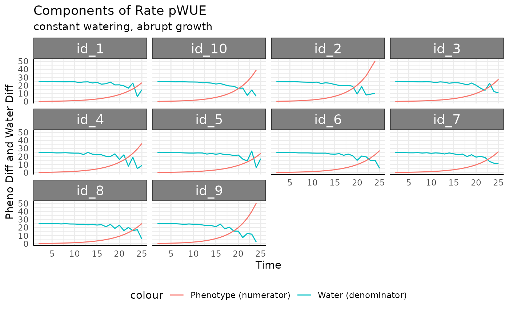
Death
Now we can look at the death group, which taken
separately looks like a totally normal growth curve.
ggplot(
rbc[rbc$pc == "death", ],
aes(time, area, group = interaction(group, id))
) +
facet_wrap(~group) +
geom_line(aes(color = group)) +
geom_point(aes(color = group), size = 0.7) +
labs(
y = expression("Area (cm"^2 * ")"),
x = "Time",
title = "Zooming in on the phenotype data for death"
) +
pcv_theme() +
theme(legend.position = "none")The measurement-to-measurement change for any asymptotic phenotype
approaches 0 at the same rate as the phenotype approaches the asymptote.
This measurement-to-measurement change is returned from
pwue as the pheno_diff column, plotted
below.
pheno_diff_ag <- aggregate(cbind(area, pheno_diff) ~ time + group,
rbc[rbc$time %% 2 == 0 & rbc$pc == "death", ],
mean,
na.rm = TRUE
)
ggplot(
rbc[rbc$pc == "death", ],
aes(time, area)
) +
facet_wrap(~group) +
geom_line(aes(color = group, group = interaction(group, id))) +
geom_point(aes(color = group), size = 0.7) +
geom_label(
data = pheno_diff_ag,
aes(label = round(pheno_diff, 1))
) +
labs(
y = expression("Area (cm"^2 * ")"),
x = "Time",
title = "Labeling the average pheno_diff ever other day"
) +
pcv_theme() +
theme(legend.position = "none")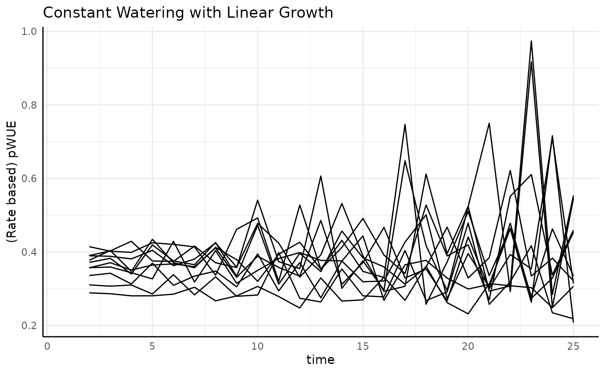
Increasing Continuous
-
increasing cont.: Pre-watering weight increases with the phenotype (area), and every day a larger amount of water is added to that pre-watered weight.
rbic <- rb[rb$wc == "increasing cont", ]
ggplot(rbic, aes(x = time, y = pWUE, group = id)) +
facet_wrap(~pc, scales = "free_y") +
geom_line() +
labs(title = "Continuously Increasing Watering") +
pcv_theme()## Warning: Removed 10 rows containing missing values or values outside the scale range
## (`geom_line()`).Luckily, compared to the constant watering we can see that there aren’t any crazy peaks or negative values here.
Sigmoid
If we were only looking at the numerator we would expect a bell curve. Since the denominator now increases over time (more water being added to reach the target weight since the plant transpires more each day as it grows larger), we should see bell curves that starts high, have a center “lump”, then end low.
rbics <- rbic[rbic$pc == "sigmoid", ]
ggplot(rbics, aes(x = time, y = pWUE, group = id)) +
geom_line() +
labs(title = "Sigmoid growth and increasing water use") +
pcv_theme()## Warning: Removed 10 rows containing missing values or values outside the scale range
## (`geom_line()`).And that’s exactly what we see. To make the reason more clear we can plot the numerator and the denominator separately.
ggplot(rbics,
aes(x = time, group = id)) +
geom_line(aes(y = total_water, color = "Water (denominator)")) +
geom_line(aes(y = pheno_diff, color = "Phenotype (numerator)")) +
labs(title = "Components of Rate pWUE",
subtitle = "Increasing Water Use, logistic growth",
y = "Pheno Diff and Water Diff", x = "Time") +
pcv_theme() +
theme(legend.position = "bottom")## Warning: Removed 10 rows containing missing values or values outside the scale range
## (`geom_line()`).
## Removed 10 rows containing missing values or values outside the scale range
## (`geom_line()`).There are lots of ways to increase watering over the course of an experiment, it could be constant, related to plant size (target weight watering tends to do this), or a step function, but they will generally follow a similar pattern to this example. Those approaches aren’t so different that when used to make pWUE they change the denominator all that much. Essentially, for any pWUE trend you see there are several ways that it could have been generated in terms of the experimental design or the values put into the ratio (10/5 = 2/1).
Aburpt
Sharper logistic growth should yield a sharper bell curve and since the phenotype is not changing at the start then reaches asymptotic size quickly, pWUE should be 0 on either side of the “spike”.
rbica <- rbic[rbic$pc == "abrupt", ]
ggplot(rbica, aes(x = time, y = pWUE, group = id)) +
geom_line() +
labs(title = "Fast Sigmoid growth and increasing water use") +
pcv_theme()## Warning: Removed 10 rows containing missing values or values outside the scale range
## (`geom_line()`).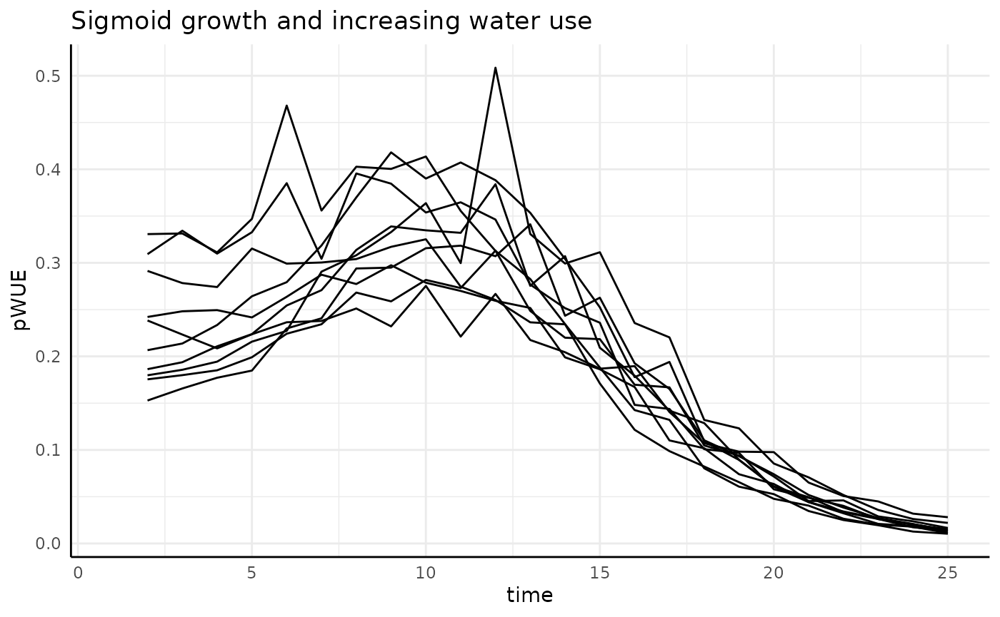
ggplot(rbica,
aes(x = time, group = id)) +
geom_line(aes(y = total_water, color = "Water (denominator)")) +
geom_line(aes(y = pheno_diff, color = "Phenotype (numerator)")) +
labs(title = "Components of Rate pWUE",
subtitle = "Increasing Water Use, abrupt growth",
y = "Pheno Diff and Water Diff", x = "Time") +
pcv_theme() +
theme(legend.position = "bottom")## Warning: Removed 10 rows containing missing values or values outside the scale range
## (`geom_line()`).
## Removed 10 rows containing missing values or values outside the scale range
## (`geom_line()`).
Exponential
Here our numerator increases exponentially while our denominator increases asymptotically. The result we should expect is exponential growth.
rbice <- rbic[rbic$pc == "exponential", ]
ggplot(rbice, aes(x = time, y = pWUE, group = id)) +
geom_line() +
labs(title = "Exponential growth and increasing water use") +
pcv_theme()## Warning: Removed 10 rows containing missing values or values outside the scale range
## (`geom_line()`).And that’s what we get. The increase in measurement-to-measurement phenotype outpaces the increase in transpiration.
ggplot(rbice,
aes(x = time, group = id)) +
geom_line(aes(y = total_water, color = "Water (denominator)")) +
geom_line(aes(y = pheno_diff, color = "Phenotype (numerator)")) +
labs(title = "Components of Rate pWUE",
subtitle = "Increasing Water Use, expoenential growth",
y = "Pheno Diff and Water Diff", x = "Time") +
pcv_theme() +
theme(legend.position = "bottom")## Warning: Removed 10 rows containing missing values or values outside the scale range
## (`geom_line()`).
## Removed 10 rows containing missing values or values outside the scale range
## (`geom_line()`).Slowing
The derivative of our non-asymptotic but slowing in growth rate phenotype is asymptotic at 0. With our numerator decreasing and the denominator increasing we should see pWUE start high and approach 0 very quickly.
rbics <- rbic[rbic$pc == "slowing", ]
ggplot(rbics, aes(x = time, y = pWUE, group = id)) +
geom_line() +
labs(title = "Slowing growth and increasing water use") +
pcv_theme()## Warning: Removed 10 rows containing missing values or values outside the scale range
## (`geom_line()`).And that’s what we get. The increase in measurement-to-measurement phenotype outpaces the increase in transpiration.
ggplot(rbics,
aes(x = time, group = id)) +
geom_line(aes(y = total_water, color = "Water (denominator)")) +
geom_line(aes(y = pheno_diff, color = "Phenotype (numerator)")) +
labs(title = "Components of Rate pWUE",
subtitle = "Increasing Water Use, slowing growth",
y = "Pheno Diff and Water Diff", x = "Time") +
pcv_theme() +
theme(legend.position = "bottom")## Warning: Removed 10 rows containing missing values or values outside the scale range
## (`geom_line()`).
## Removed 10 rows containing missing values or values outside the scale range
## (`geom_line()`).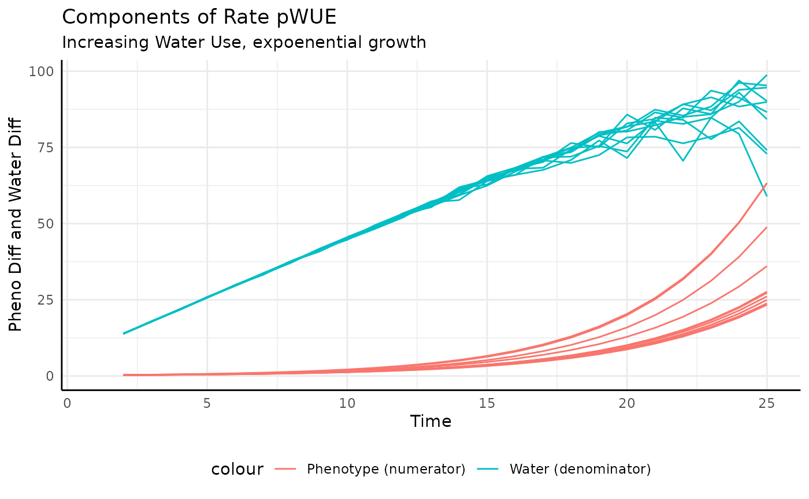
Linear
Here our numerator is constant and the denominator (transpiration) is increasing, so we should see pWUE decrease over time, but never getting to 0.
rbicl <- rbic[rbic$pc == "linear", ]
ggplot(rbicl, aes(x = time, y = pWUE, group = id)) +
geom_line() +
labs(title = "Linear growth and increasing water use") +
pcv_theme()## Warning: Removed 10 rows containing missing values or values outside the scale range
## (`geom_line()`).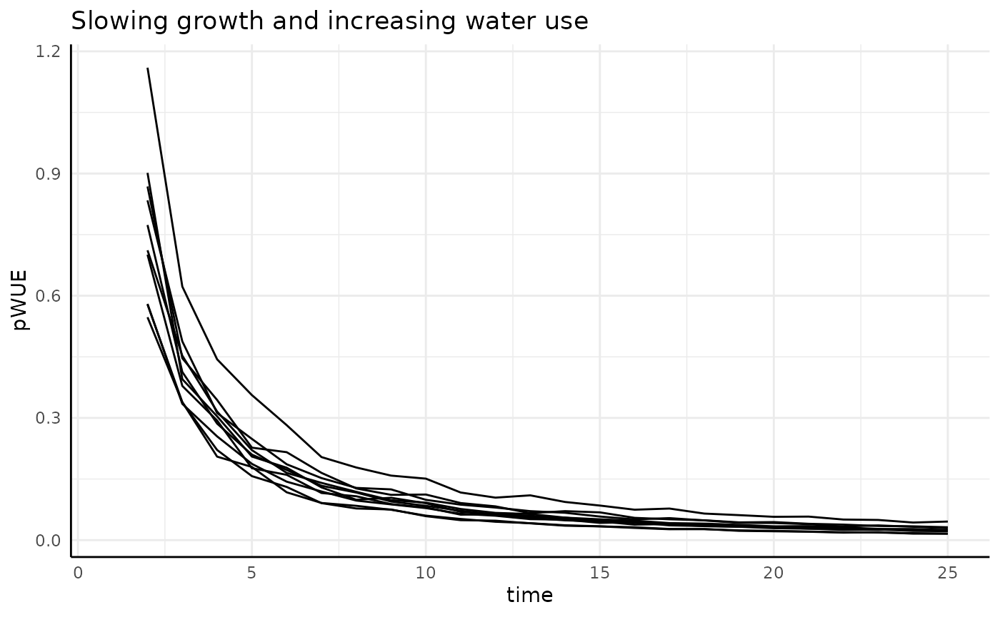
Again we look at the component pieces to check our intuition.
ggplot(rbicl,
aes(x = time, group = id)) +
geom_line(aes(y = total_water, color = "Water (denominator)")) +
geom_line(aes(y = pheno_diff, color = "Phenotype (numerator)")) +
labs(title = "Components of Rate pWUE",
subtitle = "Increasing Water Use, linear growth",
y = "Pheno Diff and Water Diff", x = "Time") +
pcv_theme() +
theme(legend.position = "bottom")## Warning: Removed 10 rows containing missing values or values outside the scale range
## (`geom_line()`).
## Removed 10 rows containing missing values or values outside the scale range
## (`geom_line()`).Death
Here we should see a very similar trend as we saw with non-asymptotic growth that is slowing down. Here our growth is asymptotic but the effect on the numerator should be the same.
rbicd <- rbic[rbic$pc == "death", ]
ggplot(rbicd, aes(x = time, y = pWUE, group = id)) +
geom_line() +
labs(title = "Very little growth and increasing water use") +
pcv_theme()## Warning: Removed 10 rows containing missing values or values outside the scale range
## (`geom_line()`).Again we look at the component pieces to check our intuition.
ggplot(rbicl,
aes(x = time, group = id)) +
geom_line(aes(y = total_water, color = "Water (denominator)")) +
geom_line(aes(y = pheno_diff, color = "Phenotype (numerator)")) +
labs(title = "Components of Rate pWUE",
subtitle = "Increasing Water Use, almost no growth",
y = "Pheno Diff and Water Diff", x = "Time") +
pcv_theme() +
theme(legend.position = "bottom")## Warning: Removed 10 rows containing missing values or values outside the scale range
## (`geom_line()`).
## Removed 10 rows containing missing values or values outside the scale range
## (`geom_line()`).Decreasing Continuous
-
decreasing cont.: Pre-watering weight increases with the phenotype (area), and every day a smaller amount of water is added to that pre-watered weight.
Now that we are inverting the trend of the denominator we should see some real differences.
rbdc <- rb[rb$wc == "decreasing cont", ]
ggplot(rbdc, aes(x = time, y = pWUE, group = id)) +
facet_wrap(~pc, scales = "free_y") +
geom_line() +
labs(title = "Continuously Decreasing Watering") +
pcv_theme()## Warning: Removed 10 rows containing missing values or values outside the scale range
## (`geom_line()`).Sigmoid
With the continuously decreasing watering scheme we see a roughly mirrored version of what we saw with the increasing watering. pWUE starts low, goes through the “bell” shape, then ends higher since the denominator is at it’s smallest at the end of the experiment when measurement-to-measurement phenotype change is back to about the same as it was in the beginning.
rbdcs <- rbdc[rbdc$pc == "sigmoid", ]
ggplot(rbdcs, aes(x = time, y = pWUE, group = id)) +
geom_line() +
labs(title = "Logistic growth and target weight watering") +
pcv_theme()## Warning: Removed 10 rows containing missing values or values outside the scale range
## (`geom_line()`).We do have one strong spike at the end which we can try to understand better by looking at each component of pWUE.
ggplot(
rbdcs,
aes(x = time, group = id)
) +
facet_wrap(~id) +
geom_line(aes(y = total_water, color = "Water (denominator)")) +
geom_line(aes(y = pheno_diff, color = "Phenotype (numerator)")) +
labs(
title = "Components of Rate pWUE",
subtitle = "Decreasing watering, logistic growth",
y = "Pheno Diff and Water Diff", x = "Time"
) +
pcv_theme() +
theme(legend.position = "bottom")## Warning: Removed 10 rows containing missing values or values outside the scale range
## (`geom_line()`).
## Removed 10 rows containing missing values or values outside the scale range
## (`geom_line()`).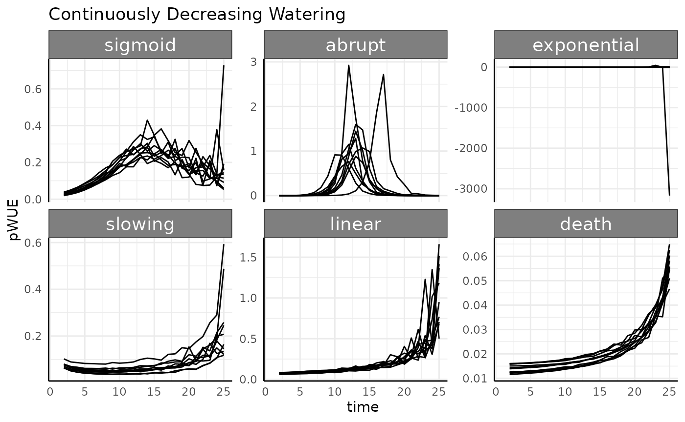
Now we can see the cause for that spike is just that the watering amount on the last day for the 4th plant was almost nothing.
Abrupt
The abrupt logistic phenotype looks essentially the same as it has for other waterings since the numerator is only non-zero in the middle of the experiment, so any trend in the denominator makes relatively minor changes to the overall trend. This will be a theme with any growth curve that gets close to its asymptote.
Exponential
Again here we remove negative values, which are caused normally by measurement error.
rbdce <- rbdc[which(rbdc$pc == "exponential" & rbdc$pWUE > 0), ]
ggplot(rbdce, aes(x = time, y = pWUE, group = id)) +
geom_line() +
facet_wrap(~id, scales = "free_y") +
labs(title = "Exponential growth and target weight watering") +
pcv_theme()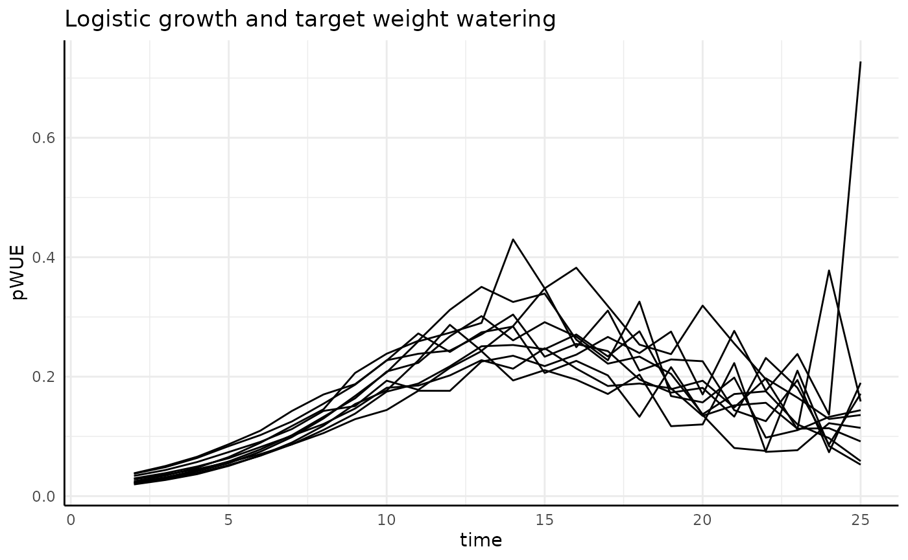
Once we remove the negative values we see the same basic trend (stronger this time as the denominator gets smaller as the exponential growth progresses) as we have been for exponentially increasing phenotype. It would be hard to design a watering protocol short of complete drought that would curb the trend for this phenotype.
Slowing
The slowing, linear, and death
groups all show similar trends to each other. Since the numerators here
are constant or slightly decreasing (the change in slope) the
denominator can push the pWUE trend dramatically.
ggplot(
rbdc[rbdc$pc %in% c("slowing", "linear", "death"), ],
aes(x = time, group = id)
) +
facet_wrap(~pc) +
geom_line(aes(y = total_water, color = "Water (denominator)")) +
geom_line(aes(y = pheno_diff, color = "Phenotype (numerator)")) +
labs(
title = "The differences in phenotype trend are overpowered",
subtitle = "Decreasing watering, any slow growth",
y = "Pheno Diff and Water Diff", x = "Time"
) +
pcv_theme() +
theme(legend.position = "bottom")## Warning: Removed 10 rows containing missing values or values outside the scale range
## (`geom_line()`).
## Removed 10 rows containing missing values or values outside the scale range
## (`geom_line()`).Absolute Value Based
Since we went through all the possible combinations with the rate based pWUE we will move faster through the absolute value based version of pWUE once we establish the difference in the pWUE formula.
As a reminder, this definition of pWUE means we are considering the absolute size of the plant at each timepoint with the formula now being:
This type of pWUE is useful for thinking about how much biomass can be maintained per unit of water.
a <- pwue(
df = ex, w = NULL, pheno = "area", time = "time", id = c("id", "group"),
pre_watering = "weight_before",
post_watering = "weight_after", method = "abs"
)The numerator here is the same as before, so we can check for some problems we already know about.
## negative positive
## 18 4302This time we’ll plot it with the scales freed on the Y-axis and with values below 0 already removed.
apos <- a[which(a$pWUE > 0), ]
ggplot(
apos[apos$id %in% paste0("id_", 1:3), ],
aes(x = time, y = pWUE, group = id)
) +
facet_grid(wc ~ pc, scales = "free_y") +
geom_line() +
pcv_theme() +
theme(
strip.text.x.top = element_text(size = 10),
strip.text.y.right = element_text(size = 10)
)Here our pWUE data look a lot like the original phenotype data, with the exception of which we’ll get to. That general similarity is because the phenotype data are used as-is in the numerator, and for the most part we don’t have drastic changes to the water transpiration (weight changes) over time.
Everything except for the abrupt logistic phenotype
basically just looks like the phenotype it represents.
The abrupt group looks strange here though, what is
going on there?
Abrupt Logistic Growth
ggplot(
apos[apos$pc == "abrupt", ],
aes(x = time, y = pWUE, group = id)
) +
facet_wrap(~wc, scales = "free_y") +
geom_line() +
pcv_theme() +
labs(
title = "Why doesn't this look more like the raw phenotype?",
y = "Abs pWUE", x = "Time"
) +
theme(
strip.text.x.top = element_text(size = 10),
strip.text.y.right = element_text(size = 10)
)
ggplot(
apos[apos$pc == "abrupt", ],
aes(x = time, group = id)
) +
facet_wrap(~wc) +
geom_line(aes(y = total_water, color = "Water (denominator)")) +
geom_line(aes(y = pheno_iter, color = "Phenotype (numerator)")) +
labs(
title = "This view kind of helps, but it still doesn't explain our trend clearly",
y = "Pheno Diff and Water Diff", x = "Time"
) +
pcv_theme() +
theme(legend.position = "bottom")What is happening here is that since our phenotype changes so quickly
between measurements 10 and 14 (roughly) the “lag” where we look at the
difference in weights becomes very important. Looking at the pre/post
watering weights for the first 3 plants in each watering condition given
abrupt logistic growth the problem is more obvious.
l2 <- reshape2::melt(ex[ex$pc == "abrupt", ],
id.vars = c("id", "group", "time", "wc"),
measure.vars = c("weight_before", "weight_after")
)
ggplot(
l2[l2$id %in% paste0("id_", 1:3), ],
aes(
x = time + ifelse(variable == "weight_before", -0.25, 0.25),
y = value, color = variable, group = id
)
) +
facet_grid(id ~ wc) +
geom_line(color = "black", linewidth = 0.1) +
geom_point(size = 0.5) +
labs(
y = "Weight", x = "Time",
title = "Sharp phenotype changes drive small denominators"
) +
pcv_theme() +
theme(
legend.position = "none",
strip.text.x.top = element_text(size = 10),
strip.text.y.right = element_text(size = 10)
)Between days 10 and 14 the line between those weights is much shorter. In this data the difference is smaller because it’s a relatively low effort simulation. In the wild we can see trends like this when an image based phenotype changes more rapidly than the underlying “true quantity”. To keep with our area example, if a plant’s leaf presentation in 2 dimensions changes in a way that is different than how its biomass actually changes then we can see this. These sort of differences highlight why we say we are using Pseudo-WUE. A similar idea could be that when corn is heat-stressed and the leaves furl into a more helical shape when viewed in 2D we don’t really think the corn plant lost biomass, it just rearranged itself in a way that an image has fewer plant pixels.
If we zoom in on our pWUE trends we can tell that despite being very noisy in the middle of the experiment from the discrepancy between area and a proxy for biomass and true biomass (rapid artificial weight gain in excess of the watering amount) the overall trend does look like our phenotype.
ggplot(
apos[apos$pc == "abrupt", ],
aes(x = time, y = pWUE, group = id)
) +
facet_wrap(~wc, scales = "free_y") +
geom_line() +
pcv_theme() +
labs(
title = "Why doesn't this look more like the raw phenotype?",
y = "Abs pWUE", x = "Time"
) +
theme(
strip.text.x.top = element_text(size = 10),
strip.text.y.right = element_text(size = 10)
) +
coord_cartesian(ylim = c(0, 10))Normalized Daily Transpiration
The last of the phenotypes calculated by pwue is
normalized daily transpiration (NDT). Normalized transpiration is the
reciprocal of the “abs” style pWUE that we just looked at, so it answers
a related question. NDT is helpful when we want to investigate how much
water is used (transpired) by a given amount of biomass.
ndt <- pwue(
df = ex, w = NULL, pheno = "area", time = "time", id = c("id", "group"),
pre_watering = "weight_before",
post_watering = "weight_after", method = "ndt"
)
ndt <- ndt[which(ndt$pWUE > 0), ]Once again the abrupt group misbehaves relative to the
other options. Suffice to say, most of the time this looks like an
obvious reciprocal of the previous pWUE implementation. In our simulated
data we see that when plants are smaller but apparently using the same
amount of water (see top row with constant watering) NDT is high. This
is most obvious in the exponential phenotype. Remember that how well you
will be able to use NDT (any any water use phenotype) will depend
entirely on how accurately you can measure transpiration.
ggplot(
ndt[ndt$id %in% paste0("id_", 1:3) & ndt$pc != "abrupt", ],
aes(x = time, y = normalized_daily_transpiration, group = id)
) +
facet_grid(wc ~ pc, scales = "free_y") +
geom_line() +
pcv_theme() +
theme(
strip.text.x.top = element_text(size = 10),
strip.text.y.right = element_text(size = 10)
)The abrupt phenotype has much higher values for
transpiration since we are dividing by close to 0 for a long time (in
the beginning of the experiment these plants are barely detectable).
This will be another caveat in real data, if there are some plants that
fail to thrive then you can end up with dramatic outliers in water use
phenotypes.
ggplot(
ndt[ndt$id %in% paste0("id_", 1:3) & ndt$pc == "abrupt", ],
aes(x = time, y = normalized_daily_transpiration, group = id)
) +
facet_grid(wc ~ pc, scales = "free_y") +
geom_line() +
pcv_theme() +
theme(
strip.text.x.top = element_text(size = 10),
strip.text.y.right = element_text(size = 10)
)Next Steps
Hopefully this helps in working with whatever kind of water usage phenotype your experiment requires. These phenotypes are often very noisy and difficult to measure, so looking at the component pieces separately for any WUE or pWUE type phenotype you collect will be helpful. You may also take extra care in looking for outliers if water use metrics are a core part of your analysis. Additionally, some popular systems have an unfortunate tendency to return negative masses for plants. That will obviously be a problem, so having some ground truth data near the middle and end of the experiment can be helpful. Whatever setup you use, try to understand each component of your calculated water use metrics before interpreting them.